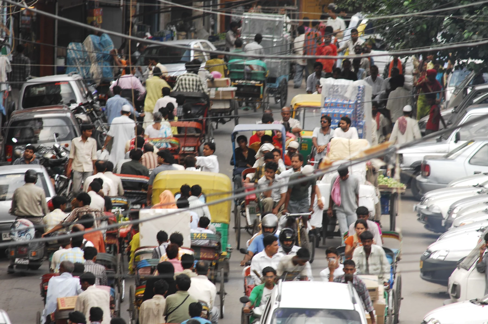
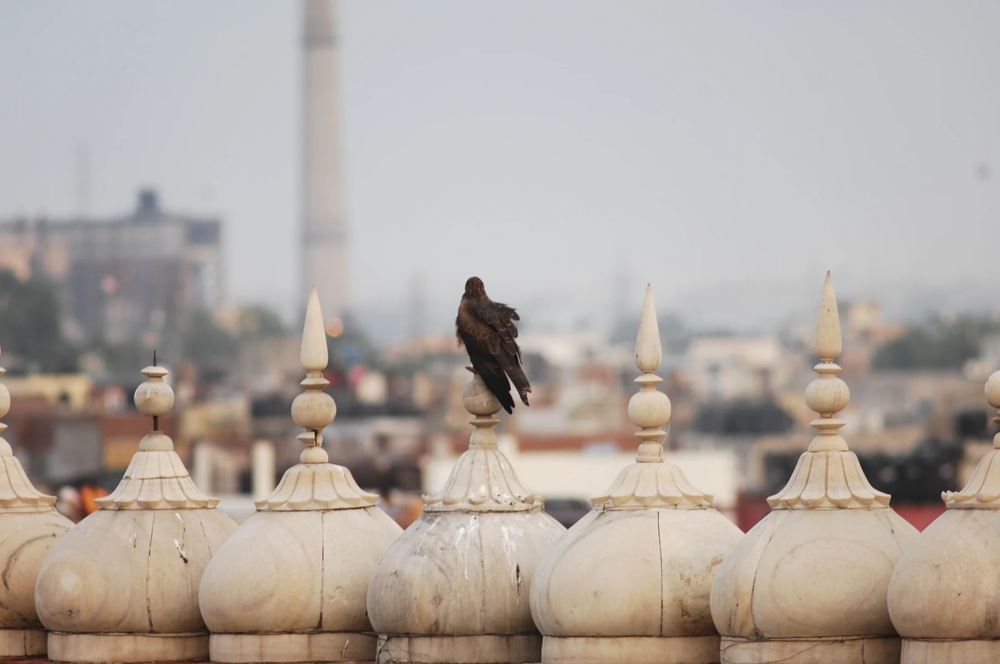

For Shashi, his camera, that he was always armed with, was never just an instrument. It was his way of seeing the world — discovering beauty in ordinary moments, dignity in forgotten faces, and stories in places and people where others seldom paused to look.
Born on the 27th day of November 1959 in Delhi, to late Shri Gauri Shankar Sahai and Smt. Sushila Devi, Shashi Sahai was the youngest of four siblings. Munger Jila Haveli Kharagpur (Bihar).
Delhi -Outram Square, Clive Square, Near Gole Market, Pandara Road, Alipore-Kolkata, IFS colony, Mayur Vihar, Gulmohar Park, Malviya Nagar.
Delhi was where his life's journey began, a journey that would eventually take him beyond the familiar boundaries of family and profession, into a world of photography, journalism, friendships, compassion and humanitarian service.
Father- Shri Gauri Shankar Sahai, Death- 1977, Delhi.
It recounts the story of a boy who learned to read newspapers under his father's guidance, and a young man who admired the confidence and artistry of his elder brother.
Shashi was a man who seldom expressed his emotions through words. He carried his feelings quietly, allowing his actions, relationships and photographs to tell the stories he rarely spoke aloud. Behind his silence lived a deeply sensitive human being who valued relationships over possessions.
When Shashi Sahai became part of Aarohan in 2006, he was carrying a sorrow that few could fully understand. Separation from his beloved daughter had profoundly affected him. The man, who had once found joy in photography, the world around him was struggling to rediscover his purpose.
At Aarohan, Shashi gradually began spending time with children. Their innocence, laughter and unconditional affection opened a window into a world he had almost forgotten. With children, he learnt how to live again.
It was around this time that Vihan entered his life, bringing a renewed sense of affection, belonging and happiness. His presence became another important source of emotional strength. What followed was a quiet rediscovery of the joy of loving and being loved.
Mother- Smt Sushila Devi, Death- 2012, Kolkata.
Shashi's relationship with photography was deeply personal. After the painful separation from his daughter, he gradually moved away from commercial photography and devoted himself increasingly to philanthropy and photography driven by personal interest.
Awarded the Bronze at Cannes for creative advertising direction. He was drawn to monuments that silently carried centuries of history, to the beauty of nature, to tigers and birds, and particularly to the human face — the eyes of women, where he seemed to discover untold stories of struggle, endurance, hope and quiet strength.
Life would test him again. In 2016, Shashi lost his brother Rakesh Sahai. The loss left him deeply shaken. For a man who attached extraordinary meaning to family relationships, losing his brother was a wound that words could barely express.
In the grief that followed, he stopped shaving, following the footsteps of his beloved brother, who always sported a beard and was a style icon. Days became weeks, weeks turned to months and years, but the beard remained.
What began as an expression of sorrow gradually became his signature appearance, distinctive personality, effortless style and unmistakable presence. But behind that appearance lay a deeply sentimental man who never easily parted with the things he loved.
When cancer entered Shashi's life, he battled the grave malady with extraordinary courage, never letting it be known about his illness. Even throughout his illness, he remained recognisably himself — kind, caring and giving.
In the final chapter of his life, the care he received became a reflection of the care he had given. He had spent years making people his own. And when he needed them most, those people became his family.
His friends began preserving his memories. Deepak Sen dedicated a book in his memory. At Aarohan, its Foundation Day was dedicated to Shashi's birthday. Friends, including Mrs. Rani Patel and Aarohan's board members, came together in remembrance.
Shashi had an extraordinary habit of preserving things. Letters written by his father, belongings connected to his brothers, old papers, photographs, and even broken pens were carefully kept. To him, each letter carried a voice. Each object held a memory.
Perhaps that is why his life's portrait can never truly be finished. Because some people leave behind photographs. Some leave behind memories. Shashi Sahai left behind a way of loving the world. And that is a legacy no passing of time can erase.
The camera is silent. The photographer is no longer behind the lens.
But somewhere, a child is smiling because of the kindness he once shared.
Somewhere, a friend is remembering the warmth of his companionship.
Somewhere, a photograph is telling a story that only his eyes could see.
He may have stepped out of the frame, but the love he gave continues to complete the picture.
Shashi Sahai — remembered through his photographs, cherished through his friendships, and forever alive in the humanity he left behind.
An enduring tribute to Shashi Sahai: A photojournalist, humanitarian, friend, and a gentle soul whose legacy continues through the lives he touched.

